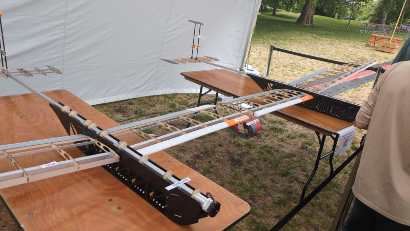
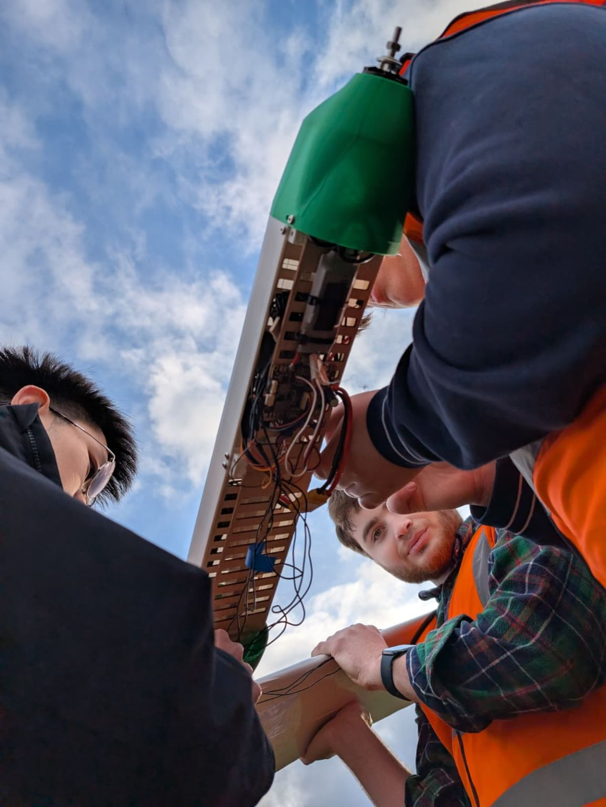
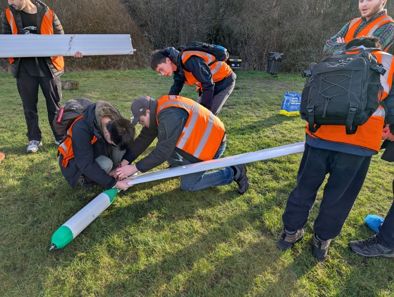

Use less power
A long, efficient wing reduces the energy we need for level flight.
Our aircraft
A light airframe. An efficient wing. Enough stored energy to keep flying after sunset.

Our January 2026 demonstrator flew on battery power. With a 4.2-metre wingspan and an 8-kilogram mass, it let us test the design and launch procedure before moving on to a larger aircraft.
We’re developing the next airframe around solar-powered endurance. The exhibition gave visitors a first look at the build; our next steps are system integration, ground testing and preparation for flight.
Read about the demonstrator in FelixThe engineering
A long, efficient wing reduces the energy we need for level flight.
The wing and its joints need strength and stiffness without unnecessary mass.
Solar cells must power the aircraft and charge batteries for the night ahead.
Avionics, control systems and telemetry help us fly and understand the aircraft’s behaviour.


Get involved
Interested in joining the team, supporting a test or sharing your expertise? We’d like to hear from you.
Talk to us